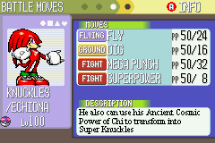
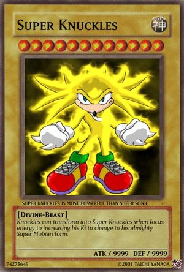
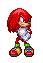
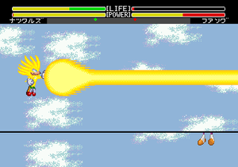
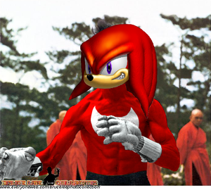

Anexo:Juegos de Knuckles The Echidna
 De: La Frikipedia, la enciclopedia extremadamente seria.
De: La Frikipedia, la enciclopedia extremadamente seria.
Artículo principal: Knuckles The Echidna
Breve listado de los videojuegos protagonizados por Knuckles:
Juegos de Sonic en los que aparece
En consolas hogareñas
Knuckles es el luchador mas combativo de
Sonic The Fighters, porque adora la "Lucha de Clases"
Knuckles usando el
Comet Punch para noquear a Sonic durante una peleíta en el
Sonic Adventure de
Dreamcast Knuckles usando su electrokinesis para iluminar las oscuras catacumbas de la pirámide de "Lost World"
...Y aquí lo vimos por primera vez transformarse en
Super Knuckles como corresponde...
- Sonic The Hedgehog (aparece mediante crackeo, jeje)
- Sonic The Hedgehog 2 (mediante tecnología Lock-On)
- Sonic The Hedgehog 3 (Nemesis/jugable con tecnología Lock-On)
- Sonic & Knuckles (el unico en el que aparece de manera legal)
- Sonic The Hedgehog Spinball (solo si algun hacker hace algún parcheo)
- Sonic 3D: Flickies Island (aparece pero no hace un carajo, nomas puro cameo)
- Sonic 6 Jan: (aparece en la portada para aparentar que el juego es bueno, pero en realidad es un asco)
- Sonic The Hedgehog: Triple Trouble (aparece como supervillano)
- Sonic Blast (el único juego de Game Gear donde es seleccionable)
- Sonic X-Treme (aparece pero nunca podrás usarlo, porque el juego se canceló y jamas vio la luz, jaja)
- Sonic R (aparece jugando carreritas, como todos...)
- Sonic The Fighters (es un torneo de Artes Marciales; obviamente no podía faltar...)
- Sonic Adventure (aquí se le hace mierda la Master Emerald)
- Sonic Adventure 2 (y aquí se le hace mierda la Master Emerald, otra vez, por huevón...)
- Sonic Shuffle (aparece, pero el juego nadie lo quiere porque apesta...)
- Sonic Heroes (aparece como patova de Sonic, pero no escala ni vuela, nomas le enseña algo de paracaidismo a los otros dos)
- Shadow The Hedgehog (solo hace cameos, pero aquí hasta Sonic hace nomas cameos... :S)
- Sonic Riders (aparece para darle hostias a Storm The Albatross)
- Sonic Riders: Zero Gravity (vuelve a darse hostias con Storm The Albatross)
- Sonic Free Riders (y bueno... firmó contrato para una trilogía...)
- Sonic The Hedgehog 2006 (aparece pero solo hace cameos, le sacaron protagonismo para incluir a Silver y a Shadow)
- Sonic And The Secret Rings (aparece interpretando al Príncipe de Persia)
- Sonic And The Black Knight (aparece interpretando a Sir Gawain)
- Sonic Colors (seee... también aparece por ahí...)
- Sonic Unleashed (lo cagaron y no apareció ni de adorno U_U)
- Sonic The Hedgehog 4 (lo cagaron y no apareció en ninguno de los dos episodios U_U)
- Sonic Generations (aparece de adorno pero lo cagaron en que no lo pusieron junto a su versión Classic como debería ser U_U)
En portátiles, Handles, y esas porquerías
 Knuckles es el
Pokémon del tipo Lucha mas poderoso de la Región de Möbius.
Juegos donde Knuckles es el principal protagonista
En consolas domésticas

...Y también salió la versión americana de
Knuckles Adventure Knuckles protagonizando su juego propio, donde demuestra que sí es toda una superestrella
- Knuckles The Echidna
- Knuckles The Echidna 2
- Knuckles The Echidna 3
- Knuckles The Echidna 4
- Knuckles The Echidna 5
- Knuckles The Echidna 6
- Knuckles The Echidna 7
- Knuckles The Echidna 8
- Knuckles The Echidna 9
- Knuckles & Sonic (tambíen el expansion pack "Knuckles 3 & Sonic")
- Knuckles The Echidna Spinball
- Knuckles 3D Blast: Angel Island
- Knuckles The Echidna CD
- Knuckles X-Treme
- Knuckles The Fighter
- Knuckles Chaotix
- Knuckles Chaotix 2
- Knuckles Chaotix 3
- Knuckles Chaotix Ultimate
- Knuckles Adventure
- Knuckles Adventure 2
- Knuckles Adventure 3
- Knuckles Adventure 4
- Knuckles Shuffle
- Knuckles Heroes
- Knuckles Riders
- Knuckles Colors
- Knuckles And The Secret Rings
- Knuckles And The Black Knight
- Knuckles And The Secret Emeralds
- Knuckles And The Dark Samurai
- Knuckles Unleashed
- Knuckles The Echidna in Sonic The Hedgehog 2
- Knuckles The Echidna in Sonic The Hedgehog 2006
- Knuckles The Echidna 2012
Mega Knuckles arribando a Angel Island
Fang le roba las Chaos Emeralds pero él se transforma en Mega Knuckles usando su Ki asi que no necesita las esmeraldas esas, pero igual las va a recuperar nomás pa' joderlo a Fang
llega hasta Hydrocity y se hecha a nadar...
En Ice Cap Zone Act 1 se pone a hacer Snowboard para demostrar que a él le sale mejor que a Sonic
En Ice Cap Zone Act 2 tuvo que nadar en las aguas heladas, y si no fuera por su Ki aumentado al Nivel Mega, se le hubieran congelado las pelotas...
Ya en Hidden Palace descubre que Fang le ha usurpado su casa, así que se cabrea y lo reta a duelo. Si nomás estando normal lo pone como camote obviamente si está en el Nivel Mega entonces Fang no tiene ninguna oportuniad...
En Sky Sanctuary Act 1 se encuentra con Metal Sonic y usa el Comet Punch para noquearlo
En Sky Sanctuary Act 2 Metal Sonic roba el poder de la master Emerald para transformarse en Super Metal Sonic...te imaginas lo cabreado que se puso el equidna!!!
Super Metal Sonic lo ataca con una Energy Ball...
Mega Knuckles lo destroza con un Mega Hadoken!!!
Ya en el Death Egg los acaba a todos y luego posa para presumir y alardear un poco...
En The Doomsday Zone atravieza el espacio exterior y destruye a los asteroides, a Eggman, Eggrobo, y todos esos pinches que le quitaron la Master Emerald...
Tras recuperar la Master Emerald, Mega Knuckles festeja por haber acabado todo el juego que protagonizó, pero obvio que con sus superpoderes del Ki aumentados al Nivel Mega de seguro que no le costó un carajo haber terminado todo el juego...
Despues de su fama y gloria decidió usar la técnica de Kamisama para librarse de su alter-ego negativo y maligno, y ahora tiene que derrotarlo...
...Eso le sirvió para ponerse a entrenar mas duro, lo que lo llevó a aumentar sus poderes para sus posteriores juegos...
...Pero luego de aquel juegazo y de varios spin-offs de lucha, la saga pasó al 3D donde hizo unos juegos de mierda como éste: Knuckles y los Anillos Secretos, Donde busca las 7 Chaos Rings del clásico Knuckles Chaotix y las usa para transformarse en Dark Spine Knuckles, que es una tremenda mierda como Dark Spine Sonic.
Videojuegos que protagoniza en consolas portátiles
- Knuckles Drift
- Knuckles Drift 2
- Knuckles The Echidna: Triple Trouble
- Knuckles Labyrinth
- Knuckles Blast
- Knuckles Advance
- Knuckles Advance 2
- Knuckles Advance 3
- Knuckles Battle
- Knuckles Pinball Party
- Knuckles Rivals
- Knuckles Rivals 2
- Knuckles Rush
- Knuckles Rush Adventure
- Knuckles Colors
- Knuckles Racer
- Knuckles Pocket Adventure
- Knuckles Chaotix DS
Juegos de RPG y Rol
 también salió la línea de cartas de Knuckles, para jugar
Calabozos y Equidnas y
Yu-Gi-Knux!.
- Knuckles Chronicles: The Dark Legion
- Knuckles Chronicles 2: Shinki VS Gouki
- Knuckles Chronicles 3: The Return Of The Shisai
- Knuckles Axe
- Knuckles Axe 2
- Knuckles Axe 3
- Knuckles Boy
- Knuckles Boy 2
- Knuckles Boy 3: Monster Land
- World of Knuckles (o Knuclkes of Warcraft)
- World of Knuckles: Burning Crusade (Burning Knucklade)
- World of Knuckles: Wrath of the Lich King (Wrath of the Lich Knuckles)
- World of Knuckles: Cataclysm (o Knucklesysm)
- Knuckles The Echidna: Emerald
- Knuckles The Echidna: Sapphire
- Knuckles The Echidna: Ruby
- Knuckles The Echidna: Pearl
- Knuckles The Echidna: Diamond
- Knuckles The Echidna: Amethyst
- Knuckles The Echidna: Soul Silver
- Knuckles The Echidna: Heart Gold
- Knuckles The Echidna and the Philosopher's Stone
- Knuckles The Echidna and the Chamber of Secrets
- Knuckles The Echidna and the Prisoner of Azkaban
- Knuckles The Echidna and the Goblet of Fire
- Knuckles The Echidna and the Order of the Phoenix
- Knuckles The Echidna and the Half-Blood Prince
- Knuckles The Echidna and the Deathly Hallows
Juegos de Lucha y Peleas
 Clásica pose de lucha en
Street Knuckles Alpha 3 - Knuckles The Fighter
- Knuckles The Fighter 2
- Knuckles Battle
- ζђ∑ Bξֆζ GλΜΞ Фჭ ЌήЏčkŁξֆ: ζђ∑ ΞĉђĬđПΔ™ (Este no tuvo muchas ventas porque cuando preguntaban por el juego nadie sabia como se escribia)
- Knuckles VS Sonic: Total Destruction
- Knuckles VS Nack: Fight For The Master Emerald
- Knuckles VS Rouge: Fightin' in the Bed - A XXX Game
- Knuckles VS Eggman: Crush the nazi Egg!!
- Knuckles VS Chaos: Atheist Guardian VS Religious God
- Knuckles VS Enerjak: The Taoist Jedi VS The Confucianist Sith
- Shin Knuckles VS Gou Knuckles: Fighting against yourself-Beat your own Alter-Ego
Knuckles protagonizó su propio juego sobre el
Torneo de las Artes Marciales (y según dicen, derrotó hasta al mismísimo
Goku...)
Una típica pelea de novios... mejor dejemos que ésta pareja resuelva sus problemas a su modo...
 Super Knuckles lanzándole un Super
Kamehameha al zopenco de
Fang (nótese que es tan poderoso que hasta puede lanzarlo con una sola mano!!!!).
- Knuckles The Echidna: Tenkaichi Budokai
- Knuckles The Echidna: Bu Yu Retsuden
- Knuckles The Echidna Z
- Knuckles The Echidna GT
- Knuckles The Echidna AF
- Knuckles Balls
- Knuckles Balls Z
- Knuckles Balls Z 2
- Knuckles Balls Z 3
- Knuckles Balls Z 4
- Knuckles Kombat
- Knuckles Kombat 2
- Knuckles Kombat 3
- Knuckles Kombat Ultimate
- Knuckles Kombat Trilogy
- Knuckles Kombat 4
- Knuckles Kombat 5: Deadly Alliance
- Knuckles Kombat 5: Tournament Edition
- Knuckles Kombat Mithology
- Knuckles Kombat Gold
- Street Knuckles
- Street Knuckles 2
- Super Street Knuckles 2
- Street Knuckles 3: Fight For The Future!
- Street Knuckles 4
- Street Knuckles Alpha
- Street Knuckles Alpha 2
- Street Knuckles Alpha 3: Saikyo Dojo
- Virtua Knuckles
- Virtua Knuckles 2
- Virtua Knuckles 3
- Virtua Knuckles 3: Team Battle
- Virtua Knuckles 4
- Virtua Knuckles 5
- Virtua Knuckles Evolution
Obviamente en
Bare Knuckles le quedaron los nudillos pelados de tanto golpear...
- Bare Knuckles
- Bare Knuckles 2
- Bare Knuckles 3
- The King Of Knuckles
- The King Of Knuckles '94
- The King Of Knuckles '95
- The King Of Knuckles '96
- The King Of Knuckles '97
- The King Of Knuckles '98
- The King Of Knuckles '99
- The King Of Knuckles: Special Stage
- Fatal Furry
- Fatal Furry: Knuckles of Fighters
- Fatal Furry 2
- Fatal Furry Special Stage
- Fatal Furry 3: Road to the Final Egg
- Real Bout Fatal Furry
- Real Bout Fatal Furry Special Stage
- Real Bout Special Stage 2 Fatal Furry: The Newcharacters
- Fatal Furry Eggman's Ambition
- Fatal Furry Third Kind's Contact
- Fatal Furry: Mark of the Echidnas (AKA Fatal Furry: Mark of the Guardians)
Juegos deportivos
La
National Hockey League también sacó un juego protagonizado por Knuckles
Knuckles también es un skater profesional
Éste sí que es un "Expansion Pack"!
- Knuckles Super Star Soccer
- Knuckles Super Star Soccer Deluxe
- Knuckles Tennis
- Knuckles Kart
- Knuckles Kart 64
- Knuckles Kart 128
- Knuckles Kart 256
- Knuckles Kart 512
- Knuckles Kart 1024
- Knuckles Golf
- Knuckles Football Superbowl Smash Deluxe
- Knuckles Blood Ball
- Treasure Hunter
- All Chaos Emeralds Hunter
- Knuckles' Mine Hunt
- Knuckles The Echidna Uchi-Mata
- Knuckles The Echidna Hataki-Komi
- Nakkurusu Za Ekiduna Juudou Warriors
- Möbian Gladiators
- MMA KTE Pro Fighter
- WWF: K.T.E.
- NFL: Knuckles The Quarterback
- NBA Jam: K.T.E.
- NHL 2: Knuckles 9
- Nakkurusu Dodge Ball: Otome Tachi no Seishun
- Super Knuckles Dodgeball
- Knuckles The Echidna: All Stars Racing
- Knuckles Echidna Pro Skater
- Knuckles Echidna Pro Skater 2
- Knuckles Echidna Pro Skater 3
- Knuckles Echidna Pro Skater 4
- Knuckles Echidna Pro Skater 5
- Knuckles Echidna Ride
- Pro Evolution Knuckles 2010
- Knuckles and His Bike
- Knuckles: The Sport Game of Knuckles
- Sega Rally: Knuckles The Echidna Special Edition
- Knuckles To Rumble
- Knuckles To Rumble 2
- Knuckles To Rumble 3
- Knuckles To Rumble 4
- Knuckles in the Olympic Games
- Knuckles in the Olympic Winter Games
- Knuckles in the X-Games
- Knuckles in the X-Games 2
- Knuckles in the XXX- Games (censurado en Tadjikistan, Burundi, y todos los paises que de cualquier forma no tenian dinero para comprar una consola, y menos un juego)
Juegos de Guerra, Estrategia y Revolución

Por alguna extraña razón los juegos de Knuckles se volvieron muy populares en
Corea del Norte Knuckles fue el primer Shogun Taoísta de la historia de Japón
- Vietcong 3:Knuckles The Echidna in Da-Nang
- God Of War Evolution: Knuckles The Echidna VS Chaos The God Of Destruction
- Knuckles The Echidna: Taoism VS Confucianism
- Knuckles The Echidna: Rebellion Of The Yellow Turbans
- Knuckles The Echidna: Rebellion Of Taoists Boxers
- Knuckles The Echidna: Communist Revolution
- Knuckles The Echidna: The Red Army and The Red Echidna
- Knuckles The Echidna: Rise Of The North Korean Offspring
- Knuckles The Echidna: Trotsky VS Stalin
- Knuckles The Echidna: The Chinese Cultural Revolution
- Knuckles The Echidna in Nepal: Rise of the Maoists
- Knuckles The Echidna in Chipre: Revenge of the Eurocommunists
- Knuckles The Echidna: Rise Of The Laotian Marxists
- Nakkurusu Za Ekiduna No Nihon Kyosanto (ナックルズ ザ エキドゥナ の 日本共産党)
- Age of Knuckles I: The Rise of Rome
- Age of Knuckles II: The Age of Kings
- Age of Knuckles III: The WarChiefs
- Age of Knuckles III: The Asian Dynasties
- Samurai Echidna
Películas basadas en los juegos de Knuckles
Como se convirtió en una celebridad gracias a sus juegos, los productores de Hollywood no tardaron en extrapolar sus aventuras hacia la pantalla grande, y así fue como Knuckles comenzó a aparecer en el celuloide, primero como co-protagonista de las peliculas basadas en los juegos de Sonic, y luego ya en sus propios filmes basados en los juegos que él mismo había estelarizado:
- Sonic The Hedgehog: The Movie
- Sonic The Hedgehog: The other Movie
- Sonic The Hedgehog 3D
- Sonic The Hedgehog HD
- Sonic The Hedgehog 3D & HD
- Sonic & Knuckles: The Movie
- Sonic & Knuckles 3D
- Sonic & Knuckles HD
- Sonic & Knuckles 3D & HD
- Knuckles The Echidna: The Movie
- Knuckles The Echidna 3D
- Knuckles The Echidna HD
- Knuckles The Echidna 3D & HD
- Knuckles Fighter
- Knuckles Kombat
- Knuckles Kombat: Anihilation
- Bare Knuckles
Otras películas de Knuckles
Ya habiendo triunfado en Hollywood, los productores hecharon al caño la idea de hacer películas basadas solo en sus juegos, y decidieron hacer cualquier tipo de película que pueda ser protagonizada por el equidna rojo, y así fue como tanto la 20TH Century Fox como la Golden Harvest contrataron a Knuckles en distintas oportunidades para hacer cientos de películas en ambas latitudes y con los estilos clásicos del cine que sus respectivos estudios acostumbraban a realizar:
La película basada en el videojuego
Bare Knuckles es uno de sus mas famosos films de acción donde muestra sus habilidades de artes marciales peleando con los nudillos pelados... ¿o por qué creías que se llama así?
- Bare Knuckles
- Knuckles The Echidna and the Riders Of Space Colony Ark
- Knuckles The Echidna and the Temple Of Dr. Doom
- Knuckles The Echidna and the Last Marxist Revolution
- Knuckles The Echidna and the Kingdom of the Emerald Skull
- Knuckles fucking Krystal
- Knuckles VS United Kingdom
- Knuckles VS Skull and Bones
- The Knuckles Code
- Echidnas and Tasmanian Demons
- The Chaotrix
- The Chaotrix Reloaded
- The Chaotrix Revolutions
- KnuX-Men
- KnuX-Men 2: Chaotix United
- KnuX-Men 3: The Last Stand
- KnuX-Men: Origins: Echidna (AKA Knuckles' Origins: Echidna)
- The Lord Of The Rings: The Communist collected 50 Rings
- The Lord Of The Rings: The Two Fortress
- The Lord Of The Rings: The Return Of The Guardian
- The Teletranporter
- The Teletranporter 2
- The Teletranporter 3
- The Teletranporter 4
- The Teletranporter 5
 Escena de
Enter The Echidna donde Knuckles demuestra la superioridad del Wudangquan venciendo a 9876 monjes Shaolin, todos al mismo tiempo!!!
- Showdown in Little Tokyo
- Showdown in Little Pyongyang
- Showdown in Chinatown
- Showdown in Little Mobius
- Showdown: The Last Stage of Sonic Spinball Game
- Big The Cat Boss
- The Zone Boss
- The Middle-Act Boss
- The Final-Act Boss
- The Last Boss
- Fist Of Furry
- Fist Of Knuckles
- Knuckles Of Fury
- Knuckles' Furry
- The Way Of The Echidna
- Enter The Echidna
- Game Of Death Egg
- Game Over
- Echidna: The Knuckles Story
- Dragon: The Knuckles The Echidna Story
- Knuckles The Echidna: First Strike
- Knuckles The Echidna: Second Impact
- Knuckles The Echidna: Third Strike
- Knuckles The Echidna: Third Impact
- Knuckles The Echidna: Who Am I?
- Crouching Tiger; Hidden Echidna
- Crouching Echidna; Hidden Dragon
- Crouching Echidna in Hidden Palace
- Echidna Dragon in Hidden Palace
- Echidna Hidden in Hidden Palace
- Knuckles Hero
- The Course Of Golden Flower
- The Course Of Golden Harvest
- The Secret Of Golden Flower
- The Secret Of Golden Emerald
- The Secret Of Master Emerald
Discografía
Como sus películas y videojuegos necesitaban ser musicalizados, fue el propio Knuckles el que se encargó de hacer la Banda Sonora de sus trabajos, mezclando Rap con Hip-Hop, y lo mas importante... ¡nada de Reggaeton! (vaya que es verdad que el Equidna es muy sabio!!!).
Estos son sus temas mas pegadizos (ya te veo buscando sus mp3 en Internet... ¬¬):
Unknown From M.E.

Knuckles filmando el videoclip para su canción tema lanzada por Sony Music.
"Here I come, rougher than the rest of them
the best of them, tougher than leather.
You can call me Knuckles, unlike Sonic I don't chuckle
I'd rather flex my muscles
I'm hard as nails, it ain't hard to tell
I break'em down whether they're solid or frail.
Unlike the rest I'm independent
It's my first breath, first test
feel the right then the worst's left"
Born on an island in the heavens
The blood of my ancestors flows inside me
My duty is to save the flower from evil deterioration
"I will be the one to set your heart free
Must cleanse youeself of that evil spirit that got in you"
Streaking lights, loud sounds, and instinct
Are the elements that keep me going
I am fighting my own mission
Nothing's gonna stand in my way
"I will be the one to set your heart free
Must cleanse youeself of that evil spirit that got in you"
Won't be frightened I'll stand up to all the pain and turmoil
Just believe in myself won't rely on others
Get this power to wipe out the havoc and Monarchy
This is my planet gonna fight for my destiny
"Here I come, rougher than the rest of them
the best of them, tougher than leather.
You can call me Knuckles, unlike Sonic I don't chuckle
I'd rather flex my muscles
I'm hard as nails, it ain't hard to tell
I break'em down whether they're solid or frail.
Unlike the rest I'm independent
It's my first breath, first test
feel the right then the worst's left"
I have no such things as weak spots
Don't approve of him but gotta trust him
This alliance has a purpose
This partnership is only temporary
"I will be the one to set your heart free
Must cleanse youeself of that evil spirit that got in you"
Won't be frightened I'll stand up to all the pain and turmoil
Just believe in myself won't rely on others
Freedom will be waiting when serenity is restored
This is my planet I shall not surrender
(Sax solo)
Won't be frightened I'll stand up to all the pain and turmoil
Just believe in myself won't rely on others
Get this power to wipe out the havoc and Monarchy
This is my planet gonna fight
Won't be frightened I'll stand up to all the pain and turmoil
Just believe in myself won't rely on others
Freedom will be waiting when serenity is restored
This is my planet I shall not surrender
"The new porcupine on the block with the puff chest
Outta the wilderness with the ruggedness
Knock, knock, it's Knuckles, the bloat thrower
Give you the cold shoulder
My spike goes through boulders
That's why I stay a loner
I was born by myself
I don't need a posse, I get in on by myself
Advisorites get shelfed"
Kick The Rock!
Knuckles dedicándole una de sus canciones mas románticas a
Rouge.
This is Knuckles, and I'm back!
I been away for a while,
But I'm back to kick some butt at Wild Canyon!
I shall find all the lost pieces of the Master Emerald here.
I'm gonna get those fools.
They wanna play with my Emeralds?
They playing with the wrong guy!
Echidna, that's what I'm representing,
Never seen a mic-hog spit like a menace.
Wild Canyon fun, I gotta chase a bat, huh,
Yeah, Rouge, she's sexy and smooth.
A double cross spy thief that's out for my jewels, uh!
I'm feelin' her in mysterious ways.
That's why I stay on point like every single day,
I gotta protect this place, I do it for my race, uh, uh!
Yeah, you know how it is,
Yo, yo,
Uh (uh),
Throw your hands up,
Come on, come on. | Yeah
Ain't nobody gon' come here and eat my plate, no!
Yo what happened, my Emerald's gone!
Somebody gonna get their's quick, my word is born!
Who could'a did this, that stitch named Rouge!
When I catch her, I'm-a get her with these tools,
There you are, come here you little thief!
Think you gon' fly and get away quick? Uh, uh!
Give up the Emerald or die, I don't love you!
Yeah, you know how it is,
Yo, yo,
Uh (uh),
Throw your hands up
Come on, come on. | Yeah
A Ghost's Pumpkin Soup
You know me, the fighting freak Knuckles,
And we're at Pumpkin Hill,
You ready?
I ain't gonna let it get to me, I'm just gonna creep,
Down in Pumpkin Hill I gots to find my lost piece.
I know that it's here, I can sense it in my feet,
The great Emerald's power allows me to feel.
I can't see a thing but it's around somewhere,
I'm gonna hold my head 'cause I have no fear.
This probably seems crazy, crazy, a graveyard theory,
A ghost tried to approach me and got leery.
Ask him a question and he vanished in a second,
I'm walkin' through valleys cryin' pumpkin in the alley.
Didn't seem happy but they sure tried to get me,
Had to back 'em up with the fist, metal crack 'em.
I'm hearing someone saying you a chicken, don't be scared!
It had to be the wind, 'cause nobody wasn't there.
I searched and I searched as I climbed up the wall,
And then I started to fly, I went in deeper!
Let it get to me? I'm just gonna creep,
Down in Pumpkin Hill I gots to find my lost piece.
I know that it's here, I sense it in my feet,
The great Emerald's power allows me to feel.
I can't see a thing but it's around somewhere,
I gotta hold my head, I have no fear.
It probably seems crazy, crazy, a graveyard theory,
A ghost tried to approach me, he got leery.
(This is Knuckles, who fears none.)
(It's real deal when it comes to my name, kid!)
I ain't gonna let it get to me, I'm just gonna creep,
Down in Pumpkin Hill I gots to find my lost piece.
I know that it's here, I can sense it in my feet,
The great Emerald's power allows me to feel.
I can't see a thing but it's around somewhere,
I'm gonna hold my head 'cause I have no fear.
This probably seems crazy, crazy, a graveyard theory,
A ghost tried to approach me and got leery.
Ask him a question and he vanished in a second,
I'm walkin' through valleys cryin' pumpkin in the alley.
Didn't seem happy but they sure tried to get me,
Had to back 'em up with the fist, metal crack 'em.
I'm hearing someone saying you a chicken, don't be scared!
It had to be the wind, 'cause nobody wasn't there.
I searched and I searched as I climbed up the wall,
And then I started to fly, I went in deeper!
Let it get to me? I'm just gonna creep,
Down in Pumpkin Hill I gots to find my lost piece.
I know that it's here, I sense it in my feet,
The great Emerald's power allows me to feel.
I can't see a thing but it's around somewhere,
I gotta hold my head, I have no fear.
It probably seems crazy, crazy, a graveyard theory,
A ghost tried to approach me, he got leery.
(Spooky up in here, it's crazy in here,)
(We still gon' keep it goin', I'm Knuckles.)
(Nobody scares me,)
(Whoever want it, bring it!)
(I don't care, we 'ka do this.)
(Then come step up to the plate, and meet your match,)
(It ain't no thang.)
Dive into the Mellow
El merchandesign es prueba de su éxito.
(Everyone flow with me, this is your boy Knuckles,)
(And this is Aquatic Mine, come on y'all.)
Let's take a dive, in Aquatic Mine,
Once was a coal pit, but now it's a water ride,
Makes you wanna sit back, enjoy the life,
And do things you like doing, get to shine.
It sure beats fighting with the foes all the time,
But I gotta do it, they always stay outta line,
Sometimes I wanna just chill and lamp,
But I'm the protector of the Emeralds and gems.
I stay knuckled up, I'm in a deep cut,
I'm seeing skulls that burn, they trying to cut me off,
Avoiding my luck, I'm feeling kinda stuck,
I'm in narrow hallways running like it's a ballgame.
Hand tracks be trackin' me to different doorways,
In a maze, and I don't know what to do,
Guaranteed though, Imm'l find the Emeralds,
Don't call me Knuckles for nothing, I get loose!
Sure beats fighting with the foes all the time,
But I gotta do it, they always stay out of line,
Sometimes I wanna just chill and lamp,
But I'm the protector of the Emeralds and gems.
Stay knuckled up, in a deep cut,
I'm seeing skulls that burn, they trying to throw me off,
Avoiding my luck, I'm feeling kinda stuck,
Don't call me Knuckles, gimme your bucks!
Deeper
This is Knuckles, and you have reached the Death Chamber.
(Death Chamber, Death Chamber, Death Chamber)
From front to back all I see is stones,
I'm glad that I don't own this room,
(Death Chamber, Death Chamber, Death Chamber)
A lot of trick stuff that makes you fall into a trap,
(Death Chamber, Death Chamber, Death Chamber)
Eggman wants to steel us all, keep the Emeralds and build a throne,
(Death Chamber, Death Chamber, Death Chamber)
Not if I can help at all, I will not let him take it over.
Sonic, what are you doin' here?
I heard you were on a quest for the Master Emerald.
You know me and you don't get along.
I don't think that's the point right now, Knuckles,
I know how much the Emerald means to you, and I wanna help get it back,
Stop being stubborn and think!
Well, I guess you're right.
You're damn right, Knuckles!
I know Eggman's secret station's here somewhere,
All we have to do is find it.
I know we'll need a key to get inside,
That's our only way to find it, so let's go!
Space Trip Steps
El éxito de Knuckles como
rapero literalmente "llega hasta las nubes"...
It's your main man Knuckles, and we in Meteor Herd,
You ready to go in space? Help me get the Emeralds.
Took a shuttle to space, and left my homes,
At least with friends, and I'm not all alone,
Bad thing was that the Emeralds spilled,
Gotta search space, man, time to get in.
What's this? Can't fly or climb,
I just could float, hope I don't die.
Meteors coming my way, weavin', gotta go straight,
Ain't a criminal, crime don't pay,
Seen'd a crazy look, Eggman's face.
Don't let it hit you, move,
Don't let it hit you, move,
Don't let it hit you, move, move,
Don't let it hit you, move.
Don't let it get you, groove,
Don't let it get you, groove,
Don't let it get you, groove, groove,
Don't let it get you, groove.
Don't let it hit you, move,
Don't let it hit you, move,
Don't let it hit you, move, move,
Don't let it hit you, move.
Don't let it get you, groove,
Don't let it get you, groove,
Don't let it get you, groove, groove,
Don't let it get you, groove.
(Ooh, yeah!)
Knuckles ya quisiera tener una banda de amigos como esos para defender su Isla Flotante de cualquiera que se entrometa sin permiso...
...Pero como no los tiene y siempre está solo, tuvo que aprender a enfrentarse él solito a todos los enemigos que lo atacan, y para eso debe usar todo su poder!!!
 Anexos Anexos
|
|
|
|
|
 Shooter Shooter
 Terror Terror
 Velocidad Velocidad
 Rol Rol
 Estrategia Estrategia
 Aventuras Aventuras
 Fight! Fight!
 Clásicos Clásicos
 Deportivos Deportivos
 Aventura gráfica Aventura gráfica
 Novela visual Novela visual
 Personajes de videojuegos Personajes de videojuegos
|
Autor(es):
- Mad Max
- Gñapero Solitario
- Genericool
- Qwerty12
- Shadowmura
- Scourge the Hedgehog
- Alangd
Frikipedia 2005-2016, Licencia
GFDL 1.2 - Extraído por FrikiLeaks